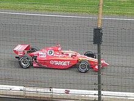

C'est quoi le nascar ?
Le NASCAR, acronyme de National Association for Stock Car Auto Racing, est l'une des disciplines les
plus emblématiques et populaires du sport automobile aux États-Unis. Le NASCAR est bien plus qu'une
simple série de courses ; c'est une véritable institution qui suscite une passion fervente chez des
millions de fans à travers le pays. Cette discipline est profondément enracinée dans la culture
américaine, et son impact sur le monde du sport et du divertissement est immense.
Le NASCAR tire ses origines des courses de stock-cars, des voitures de série modifiées pour la
compétition. L'histoire du NASCAR remonte aux années 1940, lorsque Bill France Sr. a créé la
National Association for Stock Car Auto Racing en 1947, avec pour objectif de réglementer et
d'organiser ces courses de stock-cars. Le premier événement majeur du NASCAR, la première édition de
la légendaire course Daytona 500, a eu lieu en 1959, devenant rapidement un incontournable du
calendrier.
Le NASCAR est réputé pour ses courses sur ovales, qui se déroulent sur des circuits incluant des
circuits courts, des superspeedways et des road courses. Chaque saison, le championnat de la Coupe
NASCAR Monster Energy rassemble les meilleurs pilotes du pays pour des courses épiques sur des
circuits tels que le Daytona International Speedway, le Talladega Superspeedway et le Darlington
Raceway.
 Les voitures de NASCAR, bien que basées sur des modèles de production, sont des machines de course
spécialement conçues pour une puissance extrême, une aérodynamique optimisée et une sécurité de
pointe. Le NASCAR est réputé pour son ambiance électrisante dans les tribunes, avec des fans
passionnés qui soutiennent leurs pilotes préférés.
Les voitures de NASCAR, bien que basées sur des modèles de production, sont des machines de course
spécialement conçues pour une puissance extrême, une aérodynamique optimisée et une sécurité de
pointe. Le NASCAR est réputé pour son ambiance électrisante dans les tribunes, avec des fans
passionnés qui soutiennent leurs pilotes préférés.
Outre les courses, le NASCAR englobe une culture riche en traditions. Les équipes et les sponsors
jouent un rôle crucial, et le garage est un lieu d'innovation constante. Les pit stops, où les
équipes effectuent des réparations et des ravitaillements en quelques secondes, sont des moments
cruciaux de chaque course.
Le NASCAR a également une influence profonde sur la culture populaire américaine, avec des pilotes
de légende tels que Richard Petty, Dale Earnhardt, Jeff Gordon, et plus récemment, Jimmie Johnson et
Kyle Busch. Les courses NASCAR sont retransmises à la télévision dans le monde entier, et le sport a
généré une fanbase mondiale.
 En somme, le NASCAR est bien plus qu'une série de courses. C'est un héritage, une tradition, et une
passion qui continue de captiver les cœurs et les esprits de millions de fans, faisant du NASCAR un
élément essentiel de la culture automobile américaine. Que vous soyez un amateur de vitesse, un
passionné de mécanique, ou simplement en quête d'une dose d'adrénaline, le NASCAR offre une
expérience sportive inoubliable, à ne pas manquer.
En somme, le NASCAR est bien plus qu'une série de courses. C'est un héritage, une tradition, et une
passion qui continue de captiver les cœurs et les esprits de millions de fans, faisant du NASCAR un
élément essentiel de la culture automobile américaine. Que vous soyez un amateur de vitesse, un
passionné de mécanique, ou simplement en quête d'une dose d'adrénaline, le NASCAR offre une
expérience sportive inoubliable, à ne pas manquer.
Les championnats du Nascar
Le Daytona 500, couru sur le circuit Daytona International Speedway en Floride, est l'une des
courses automobiles les plus prestigieuses au monde. Il marque le coup d'envoi de la saison NASCAR,
attirant des millions de fans et offrant une journée d'excitation, de vitesse et de suspense. Les
pilotes de stock-car s'affrontent sur cette piste ovale de 2,5 miles, à la recherche de la victoire
la plus convoitée de la saison. Le Daytona 500 est célèbre pour ses traditions, notamment le chant
de l'hymne national américain, les dépassements spectaculaires et l'emblématique trophée Harley J.
Earl. Les champions de cette course, tels que Richard Petty et Dale Earnhardt, sont devenus des
légendes du sport automobile. C'est un événement incontournable pour tous les amateurs de course et
une expérience mémorable dans l'histoire du sport automobile américain.
La Coca-Cola 600 est une course automobile majeure de la NASCAR Cup Series qui se tient au Charlotte
Motor Speedway en Caroline du Nord. Cette épreuve est l'une des plus longues et des plus exigeantes
du calendrier, se déroulant sur 600 miles, d'où son nom. La Coca-Cola 600 est traditionnellement
courue le week-end du Memorial Day aux États-Unis, ajoutant une signification particulière à cette
course. Elle est connue pour son ambiance festive et sa célébration du patriotisme, avec des
cérémonies spéciales pour honorer les vétérans et les soldats tombés au combat. Les pilotes
s'affrontent sur cette piste de 1,5 mile, combinant vitesse, stratégie et endurance. La victoire à
la Coca-Cola 600 est l'un des accomplissements les plus prestigieux du sport automobile américain,
avec des champions tels que Jimmie Johnson et Darrell Waltrip qui ont inscrit leur nom au palmarès.
C'est une épreuve incontournable pour les amateurs de NASCAR, offrant une expérience sportive et
émotionnelle unique.
Le Charlotte Roval est un circuit automobile hybride situé au Charlotte Motor Speedway, en Caroline
du Nord, offrant une expérience de course unique en son genre. Combinant un circuit ovale
traditionnel avec un tracé de circuit routier, le Roval crée un défi excitant pour les pilotes de la
NASCAR Cup Series. Avec ses virages serrés, ses chicanes techniques et ses sections rapides, cette
piste de 2,28 miles teste la polyvalence des pilotes, exigeant des compétences de conduite aussi
bien sur ovale que sur circuit routier. Le Charlotte Roval est devenu une étape incontournable du
calendrier, attirant l'attention des fans pour ses courses spectaculaires et imprévisibles. C'est un
endroit où l'histoire continue de s'écrire, avec chaque tour apportant son lot de défis et
d'excitation.
Des formule 1 en Nascar ?
Il est parfois tentant de confondre l'IndyCar avec la Formule 1, mais il s'agit de deux disciplines
distinctes du sport automobile. L'IndyCar, abréviation d'Indianapolis Car, est un championnat de
monoplaces américain qui se distingue par son propre ensemble de règles et d'approches techniques.
Contrairement à la Formule 1, qui privilégie les circuits européens et les constructeurs, l'IndyCar
est fortement enracinée aux États-Unis, avec des courses emblématiques comme l'Indy 500, le Grand
Prix de Long Beach, et le Grand Prix de Detroit.
Les voitures d'IndyCar, bien qu'aérodynamiques et rapides, diffèrent des Formules 1 par leur
conception et leurs spécifications. Elles sont optimisées pour les courses ovales et routières, avec
des voitures plus lourdes et des moteurs V6 biturbo, fournissant une puissance exceptionnelle.
L'IndyCar est réputée pour ses courses passionnantes, avec des dépassements fréquents, des arrêts
aux stands stratégiques et une concurrence acharnée entre les pilotes. Les courses sont souvent
disputées sur des circuits diversifiés, ajoutant une dose d'excitation à chaque épreuve.

L'IndyCar partage certains points communs avec la NASCAR, une autre discipline majeure du sport
automobile américain. Les deux championnats ont en commun des courses sur ovales, mais les voitures
et les règlements diffèrent. La NASCAR se caractérise par ses voitures de type stock-car qui
tournent exclusivement à gauche sur des circuits ovales, tandis que l'IndyCar propose une variété de
types de circuits, de l'ovale aux routes en passant par les circuits urbains. Cette diversité
distingue l'IndyCar et la NASCAR, créant un paysage varié pour les fans de sport automobile. En fin
de compte, ces deux disciplines apportent une riche mosaïque de compétition automobile aux
États-Unis, chacune avec son propre attrait et sa propre tradition.
| Année | Champion Pilote | Champion Équipe | Nombre de Courses | Nombre de Victoires Pilote | Nombre de Victoires Équipe | Nombre de Pôles Pilote |
|---|---|---|---|---|---|---|
| 2019 | Kyle Busch | Joe Gibbs Racing | 36 | 5 | 19 | 4 |
| 2018 | Joey Logano | Team Penske | 36 | 3 | 8 | 1 |
| 2017 | Martin Truex Jr. | Furniture Row Racing | 36 | 8 | 8 | 6 |
| 2016 | Jimmie Johnson | Hendrick Motorsports | 36 | 5 | 4 | 4 |
| 2015 | Kyle Busch | Joe Gibbs Racing | 36 | 5 | 14 | 4 |
| 2014 | Kevin Harvick | Stewart-Haas Racing | 36 | 5 | 6 | 8 |
| 2013 | Jimme Johnson | Hendrick Motorsports | 36 | 6 | 5 | 4 |
| 2012 | Brad Keselowski | Penske Racing | 36 | 5 | 5 | 5 |
| 2011 | Tony Stewart | Stewart-Haas Racing | 36 | 5 | 4 | 1 |
| 2010 | Jimme Johnson | Hendrick Motorsports | 36 | 6 | 9 | 6 |